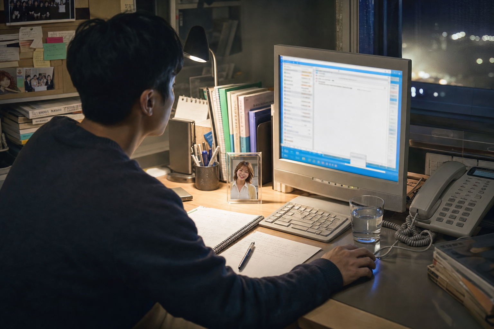

092. 나고야라는 말
새벽 한 시가 조금 넘은 시간이었다.
방 안은 컴퓨터 본체 돌아가는 소리만 낮게 울리고 있었다. 용식은 책상 앞에 앉아 일본어 단어장을 펼쳐 놓은 채 멍하니 모니터를 보고 있었다. 받은 메일함에는 새 메일 하나가 떠 있었다. 보낸 사람 이름은 나카타 유즈키였다.
제목은 짧았다.
결과가 나왔습니다.
용식은 마우스를 잡은 손에 힘을 줬다. 클릭 한 번이면 열리는 메일이었다. 그런데 그 클릭이 이상하게 어려웠다. 창밖에서는 새벽 도로를 지나는 오토바이 소리가 길게 지나갔다. 그는 물컵을 들어 한 모금 마셨지만, 물은 이미 미지근했다.
메일을 열었다.
유즈키의 문장은 여전히 서툴렀다. 일본어 문장 아래에는 한국어로 쓰려다 고친 흔적이 군데군데 남아 있었다. 정직원 전환 재심사에서도 좋은 결과를 받지 못했다는 내용이었다. 계약은 9월 말까지이고, 그 뒤에는 나고야 집으로 돌아갈 것 같다고 했다. 도쿄에서 더 버티고 싶었지만, 생활비와 집안 사정이 마음처럼 되지 않는다고 했다.
마지막 문장은 조금 길었다.
겨울에 도쿄에서 눈을 같이 보는 약속은 못 지킬지도 모르지만, 그래도 겨울에 볼 수 있으면 좋겠다고. 도쿄가 아니어도 괜찮다고. 나고야는 도쿄보다 조용하지만, 두부 가게 앞 골목에 겨울 냄새가 좋다고.
용식은 그 문장을 몇 번이나 다시 읽었다.
나고야.
화면 위의 세 글자가 방 안에 실제 장소처럼 놓였다. 유즈키가 떠나면 도쿄 어학원 생활은 더 이상 같은 기억으로 남지 않을 것이다. 생활 지원실 창구, 기숙사 앞 골목, 비 오는 날 나눠 쓴 우산, 하나비 마츠리에서 손을 놓지 못하던 인파. 그 모든 게 한 도시 안에 묶여 있었는데, 이제 그 도시에서 빠져나와 다른 이름으로 밀려나고 있었다.
폴더폰이 울렸다.
초연이었다.
용식은 화면을 보고도 바로 답하지 못했다. 메일 창을 닫을 수가 없었다. 유즈키의 문장과 초연의 문자가 한 모니터와 한 손 안에서 겹쳤다.
답장을 보내고 나서도 초연은 곧바로 다시 물었다.
용식은 메일 창을 내려놓았다. 완전히 닫지는 못했다. 작업표시줄 아래에 작게 남은 창이, 숨긴 물건처럼 눈에 걸렸다.
거짓말이었다. 그는 이미 씻었다. 머리도 말랐다. 다만 지금 목소리로 초연과 통화하면, 뭔가 다른 게 섞여 나올 것 같았다. 그는 의자 등받이에 기대 눈을 감았다. 초연에게 미안한 마음과 유즈키에게 미안한 마음은 닮은 것 같으면서도 달랐다. 초연에게는 숨긴 일들이 너무 많아서 미안했고, 유즈키에게는 자신이 돌아갈 수 없는 곳에 계속 약속을 걸어 둔 것 같아서 미안했다.
그는 답장을 쓰기 시작했다.
처음에는 일본어로 썼다. 한 줄 쓰고 지웠다. 너무 정중했다. 다시 썼다. 이번에는 너무 가벼웠다. 또 지웠다. 결국 그는 천천히, 자신이 실제로 할 수 있는 말만 남겼다.
겨울에 갈게요. 도쿄가 아니어도 괜찮아요. 나고야도 괜찮아요. 그때 두부 가게 앞 골목도 보여 주세요.
그 문장을 쓰는 동안, 그는 자신이 무엇을 약속하고 있는지 알고 있었다. 초연에게는 말하지 않은 겨울이었다. 한서윤에게도, 정다은에게도, 누구에게도 말하지 않은 겨울이었다.
보내기 버튼 위에서 손가락이 멈췄다.
폴더폰이 다시 울렸다.

그는 메일을 보냈다. 그리고 바로 폴더폰을 열었다.
통화 연결음이 두 번 울리고 초연이 받았다.
[김초연] "왜 이렇게 오래 걸렸어."
[김용식] "머리 말리느라."
[김초연] "목소리 왜 그래?"
[김용식] "졸려서."
초연은 잠깐 말이 없었다. 전화 너머로 침대 이불이 바스락거리는 소리가 들렸다. 그녀도 누워 있는 것 같았다. 평소 같으면 시험 범위 얘기나 과제 얘기로 넘어갔을 텐데, 오늘은 그 침묵이 쉽게 지나가지 않았다.
[김초연] "너 요즘 나한테 말 안 하는 거 많지."
용식은 의자 팔걸이를 붙잡았다.
[김용식] "뭐가."
[김초연] "그냥 느낌이 그래."
[김용식] "느낌으로 사람 잡지 마."
말이 나가고 나서야 세다는 걸 알았다. 초연도 바로 다쳤다. 숨을 삼키는 소리가 들렸다.
[김초연] "나 사람 잡는 거야?"
[김용식] "그런 뜻 아니야."
[김초연] "너는 꼭 말해 놓고 그런 뜻 아니래."
용식은 눈을 감았다. 모니터 아래 작업표시줄에는 방금 보낸 메일 창이 아직 남아 있었다. 그 작은 표시 하나가 목에 걸린 가시 같았다.
[김용식] "미안. 내가 피곤해서 그래."
[김초연] "피곤하면 자. 나도 잘게."
[김용식] "초연아."
[김초연] "응."
[김용식] "화났어?"
[김초연] "아니."
아니라는 말은 화났다는 말보다 더 차가웠다.
통화가 끊긴 뒤, 용식은 한참 동안 수화기에서 귀를 떼지 못했다. 방 안 스탠드 불빛 아래, 책상 위에는 일본어 단어장, 물컵, 폴더폰, 그리고 모니터 속 보낸 편지함이 놓여 있었다. 각각 따로 보면 아무 문제 없는 물건들이었다.
같이 놓이면 전부 문제였다.
다음 날 학교에서 정다은은 그 변화를 금방 알아봤다. 오전 수업이 끝난 뒤 학생식당으로 가는 길, 그녀는 용식 옆으로 와서 발걸음을 맞췄다.
[정다은] "너 어제 잠 못 잤지."
[김용식] "시험 기간이라고 했잖아."
[정다은] "시험 핑계 되게 좋아하네."
[김용식] "핑계 아니야."
[정다은] "초연이랑 싸웠어?"
용식은 대답하지 않았다. 정다은은 그 침묵을 보며 입꼬리를 아주 조금 올렸다. 그녀는 손에 들고 있던 파일을 가슴에 안고, 사람들 사이를 피해 한 걸음 가까이 붙었다. 어깨가 스칠 듯 말 듯한 거리였다.
[정다은] "너희는 사귀는 게 아니라 출석 체크하는 것 같아."
[김용식] "말 좀 가려서 해."
[정다은] "왜. 찔려?"
용식은 멈춰 섰다. 복도 한가운데서 멈추는 바람에 뒤에서 오던 동기 하나가 어깨를 피해 지나갔다. 정다은도 멈췄다. 그녀는 놀라지 않았다. 오히려 그 반응을 기다렸다는 듯 그를 올려다봤다.
[김용식] "너 그만해."
[정다은] "그만하라니까 더 티 나."
그녀는 웃으면서 먼저 걸어갔다. 밝은 노란색 머리핀이 짧은 단발 사이에서 작게 흔들렸다. 용식은 그 뒷모습을 보다가 뒤늦게 학생식당 쪽으로 걸었다.
그날 점심 메뉴는 돈가스였다. 그는 접시를 받아 들고도 식욕이 없었다. 초연에게서는 아직 연락이 오지 않았다. 오지 않으니 편해야 했다. 그런데 이상하게 더 불안했다.
연락이 오면 숨이 막히고, 안 오면 목이 말랐다.
그 사이를 정다은이 너무 쉽게 알아보고 있었다.